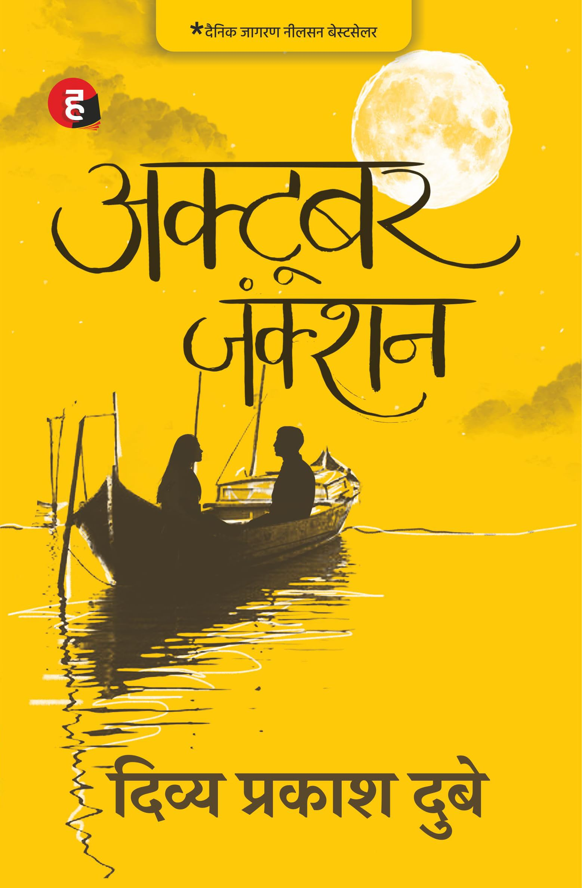
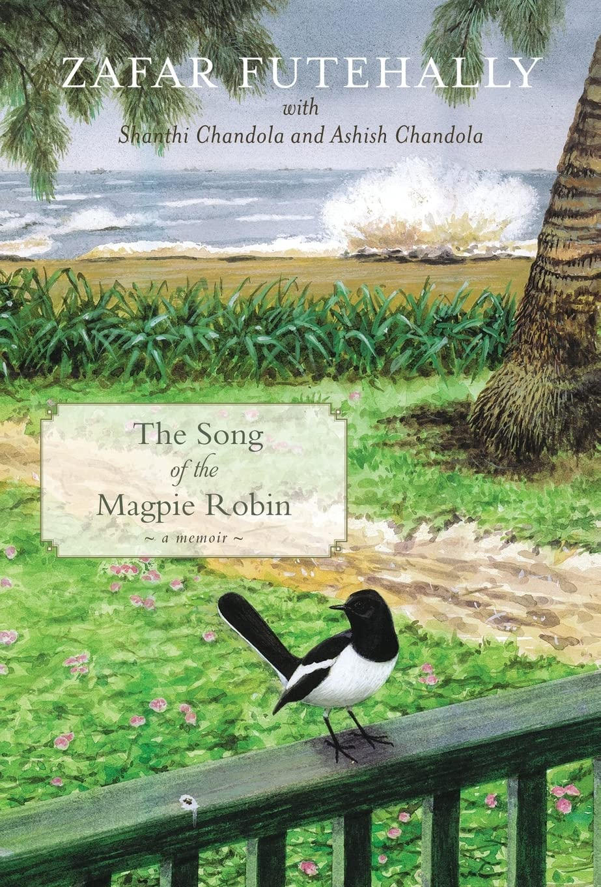
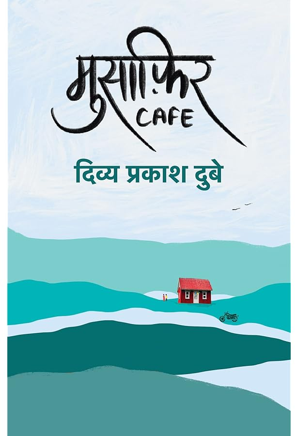

October Junction-- Divya Prakash Dubey

I read it to help with my Hindi learning, because it uses very simple language and I surprisingly found it very comprehensible. However, aside from that, it is definitely one of the worst books I have ever read.
The Bell Jar-- Sylvia Plath
The Song of the Magpie Robin-- Zafar Futehally

Biography written by Zafar Futehally, a famous Indian Conservationalist and relative of Salim Ali. The book mentioned many places which were very familiar to me (Bombay National Historical Society, Raman Research Institute etc.) or places I had just recently visited (Sanjay Gandhi National Park), which I have never experienced before in a book. He was heavily involved in almost all the major conversation orgs in India, so it was a good overview of the history of conservation in India and also to get a perspective on conversation from someone on the 'inside'; he talks both about the science and politics involved. Of course he was also a bird lover and, aside from the interesting facts he mentioned (which was made doubly enjoyable by actually knowing these birds), it was nice to hear about his approach to birding-- more focused on enjoying seeing the same bird repeatedly and taking joy in observing their habits rather than chasing seeing as many species as possible. I am thinking of looking at some of the editions of the famous periodical he ran - 'Newsletter for Birdwatchers'.
A Portrait of the Artist as a Young Man-- James Joyce
The Lost World of Hindustani Music-- Kumar Prasad Mukherji
Musafir Cafe-- Divya Prakash Dubey

Also a terrible book-- see October Junction review
Back to Main Page